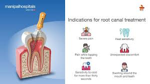
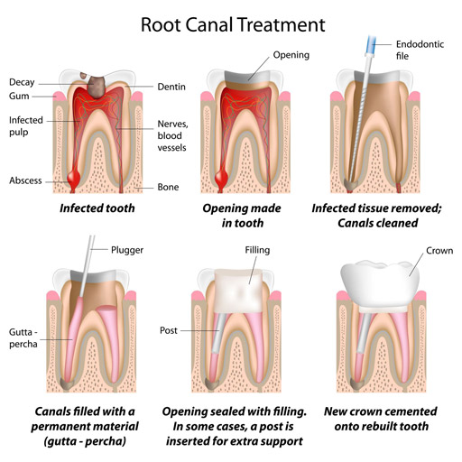
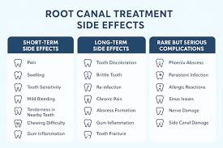

🦷 Root Canal Treatment (RCT)
Root canal treatment is a dental procedure used to save a tooth that has infected or inflamed pulp (the soft tissue inside the tooth containing nerves and blood vessels).
🔍1). What Is a Root Canal?
Inside each tooth:- Enamel – outer hard layer.
- Dentin – middle layer.
- Pulp – inner soft tissue (nerves + blood vessels).
When bacteria reach the pulp (usually from deep decay or cracks), infection occurs. A root canal removes the infected pulp, cleans the canals, and seals the tooth.
❗2). Why Is Root Canal Needed?

Common causes:- Deep cavities.
- Repeated dental procedures.
- Cracked or chipped tooth.
- Trauma/injury.
- Untreated gum disease
- Tooth abscess.
⚠️3).Symptoms You May Notice
- Severe tooth pain.(especially while chewing)
- to hot/cold that lingers.
- Swollen or tender gums.
- Darkening of the tooth.
- Pimple-like swelling on gum (abscess).
- Bad taste or pus.
- Sometimes no symptoms at all.
🛠️4).Step-by-Step Procedure
🦷 Step 1: Examination & X-ray- Dentist checks infection depth using X-rays.💉 Step 2: Local Anesthesia- To numb the area (procedure is usually painless).
🔓 Step 3: Access Opening- Small hole made in the tooth.
🧼 Step 4: Cleaning & Shaping-
- Infected pulp removed.
- Root canals cleaned and disinfected.
- Canals shaped properly.
🧴 Step 5: Filling the Canals- Canals filled with rubber-like material (gutta-percha).
🛡️ Step 6: Crown Placement- A crown is usually placed to protect and strengthen the tooth.
😌5). Is It Painful?
Modern root canal treatment is not very painful. Most patients say it feels similar to getting a filling.
After treatment:- Mild pain for 2–3 days.
- Manageable with prescribed painkillers.
⏳6). How Long Does It Take?
- Front teeth: 30–60 minutes.
- Molars: 60–90 minutes
- Usually 1–2 visits
- Complex cases may require 3 visits.
💰7). Cost Factors

Cost depends on:- Tooth type.(molars cost more)
- Need for crown.
- City/country.
- Dentist’s expertise.
- Crown is often an additional cost.
✅8). Advantages of Root Canal-
Saves your natural tooth.Prevents infection spread.
Restores chewing function.
Better than extraction.
Maintains jawbone structure.
🚨9). What Happens If Not Treated?
❌ Severe pain.❌ Swelling in face/jaw.
❌ Spread of infection.
❌ Tooth loss.
❌ Serious health complications.
🧼10). Aftercare Instructions
- Avoid chewing on treated tooth until crown is placed.
- Maintain good oral hygiene.
- Brush twice daily.
- Floss daily.
- Regular dental checkups.
🕒11). How Long Does a Root Canal Last?
With proper care: 🦷 10–20 years. 🦷 Sometimes lifetime Success rate: 85–95%⚖️12). Root Canal vs Extraction:
- Root Canal Extraction.
- Saves natural tooth Removes tooth.
- Maintains chewing function Needs implant/bridge.
- Better long-term option May cause shifting of teeth.
- Dentists usually recommend saving the tooth whenever possible.
⚡13). Possible Complications (Rare)

- Reinfection.
- Cracked tooth.
- Missed canal.
- Crown delay leading to fracture.
- Most complications are preventable with proper care.
🔄14). Can Root Canal Fail?
Yes, but uncommon. Reasons:- Complex canal anatomy.
- MIncomplete cleaning.
- Delayed crown placement.
- New decay.
- Retreatment or minor surgery (apicoectomy) may be required.
🧠15). Myths vs Facts
❌ Myth: Root canal is very painful ✔ Fact: Infection pain is worse than the treatment ❌ Myth: Tooth becomes “dead” and useless ✔ Fact: Tooth still functions normallyReady to Transform Your Smile?
Book your appointment today and take the first step towards a healthier, brighter smile!
Book Appointment